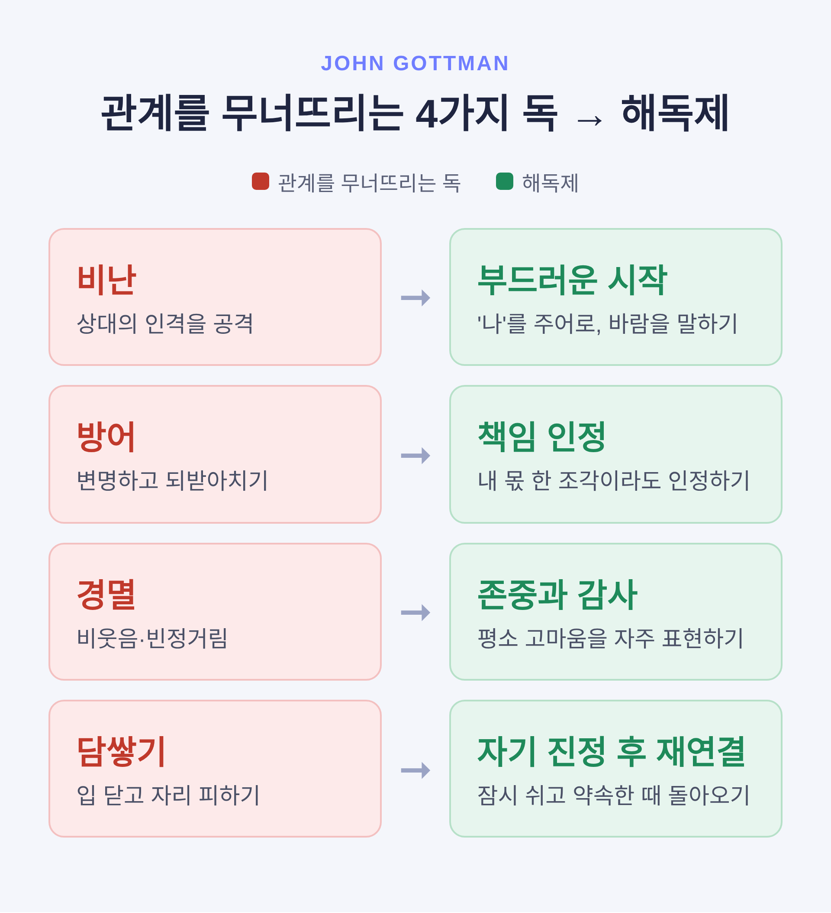
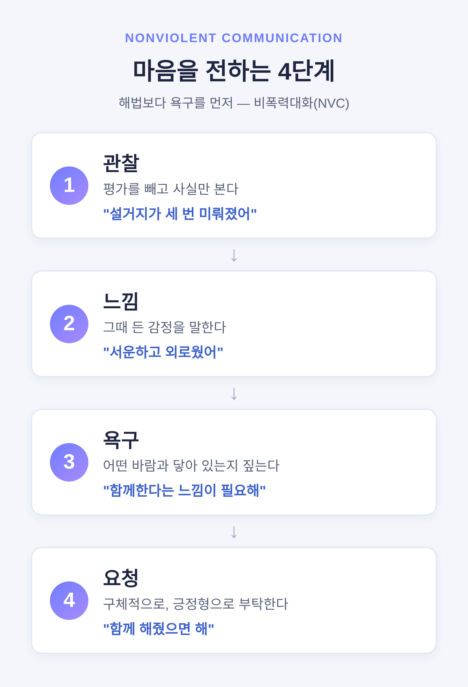

부부 갈등 대화법
— 비난이 아니라 마음을 전하는 법

이번 글에서는 부부 갈등을 키우지 않고 푸는 대화법을 정리해 보겠습니다.
핵심부터 말씀드리면 이렇습니다. 갈등 자체가 문제는 아닙니다. 문제는 갈등을 ‘어떻게 말하느냐’입니다. 같은 불만도 상대의 인격을 겨누면 싸움이 되고, 내 마음을 전하면 대화가 됩니다.
상담 이론 가운데 널리 검증된 가트맨의 연구와 비폭력대화, 그리고 나-전달법을 바탕으로 살펴보겠습니다.
관계를 무너뜨리는 네 가지 신호
부부치료의 권위자인 존 가트맨은 40여 년간 3,000쌍이 넘는 부부의 대화를 관찰했습니다. 그리고 대화 15분만 보고도 이혼 여부를 약 90% 정확도로 맞혔습니다.
그가 찾아낸 위험 신호는 네 가지입니다. 흔히 ‘관계를 무너뜨리는 네 가지 독’이라 부릅니다.
첫째는 비난입니다. 행동이 아니라 사람을 겨눕니다. “설거지를 안 했네”가 아니라 “당신은 원래 그런 사람이야”라고 말하는 것입니다.
둘째는 방어입니다. 내 몫을 인정하지 않고 변명하거나 “너야말로”라며 되받아치는 것입니다.
셋째는 경멸입니다. 비웃음, 빈정거림, 눈 흘김. 가트맨은 이 경멸을 이혼을 예측하는 가장 강한 신호로 보았습니다.
넷째는 담쌓기입니다. 입을 닫고 자리를 피합니다. 대개 감정이 넘쳐 더는 감당이 안 될 때 나오는 반응입니다.

독에는 해독제가 있습니다
다행히 가트맨은 네 가지 독마다 짝이 되는 ‘해독제’도 함께 제시했습니다. 갈등을 없애자는 것이 아니라, 다루는 방식을 바꾸자는 이야기입니다.
비난의 해독제는 부드러운 시작입니다. 대화의 첫 3분이 그 대화의 끝을 좌우합니다. 거칠게 열면 거칠게 닫힙니다. ‘당신’으로 시작하는 공격 대신 ‘나’의 감정과 바람을 말합니다.
방어의 해독제는 책임 인정입니다. 갈등의 전부가 아니어도 좋습니다. 내 몫 한 조각만 인정해도 분위기가 달라집니다. “그 부분은 내가 놓쳤네”처럼 말입니다.
경멸의 해독제는 존중과 감사입니다. 평소에 고마움을 자주 표현해 둔 사이일수록 갈등이 와도 덜 흔들립니다.
담쌓기의 해독제는 자기 진정 후 재연결입니다. 감정이 넘칠 땐 잠시 멈추는 편이 낫습니다. 심호흡을 하고, 다시 이야기할 시각을 정해 둔 뒤 돌아옵니다. 피하는 것과 잠시 쉬는 것은 다릅니다.
마음을 전하는 네 단계
비폭력대화(NVC)는 마셜 로젠버그가 정립한 대화법입니다. 습관적으로 튀어나오는 반응 대신, 네 단계를 거쳐 내 마음을 전합니다.
먼저 관찰입니다. 평가를 빼고 사실만 봅니다. “당신은 무책임해”는 평가입니다. “이번 주에 약속한 설거지가 세 번 미뤄졌어”는 관찰입니다.
다음은 느낌입니다. 그때 든 감정을 말합니다. 서운함, 외로움, 불안 같은 것입니다.
그다음은 욕구입니다. 그 느낌이 어떤 바람과 닿아 있는지 짚습니다. 협력받고 싶다, 존중받고 싶다, 쉬고 싶다.
마지막은 요청입니다. 상대가 해주길 바라는 것을 구체적으로, 긍정형으로 부탁합니다. 강요가 아니라 부탁입니다.
NVC가 가르치는 순서는 분명합니다. 해법을 먼저 꺼내지 말고, 양쪽의 욕구를 먼저 확인하라는 것입니다.

‘너’ 대신 ‘나’로 시작하기
같은 결을 가진 더 간단한 도구가 나-전달법입니다.
말의 주어를 ‘너’에서 ‘나’로 바꾸는 것이 전부입니다. ‘너’로 시작하면 상대는 공격받았다고 느껴 방어막을 칩니다. ‘나’로 시작하면 같은 불만도 한결 부드럽게 가닿습니다.
집안일을 두고 예를 들어 보겠습니다.
예전엔 이렇게 말했습니다. “넌 왜 아무것도 안 해? 나 혼자 다 하잖아.”
지금은 이렇게 바꿔 봅니다. “내가 집안일을 혼자 할 때, 지치고 외로운 기분이 들어. 함께 해줬으면 해.”
내용은 같습니다. 그러나 듣는 사람의 마음은 전혀 다릅니다. 앞 문장은 싸움을 부르고, 뒤 문장은 대화를 엽니다.
듣는 일이 절반입니다
대화는 말하기 절반, 듣기 절반입니다. 그중에서도 상대의 감정을 ‘인정’해 주는 일이 큽니다.
감정 인정은 동의와 다릅니다. 의견에 동의하지 않아도 감정의 타당함은 인정할 수 있습니다. “그래서 서운했겠다”, “그 상황이면 화날 만하지” 같은 한마디면 충분합니다.
연구에 따르면 이런 인정은 부정적 감정의 강도를 낮추고 마음을 가라앉히는 데 도움이 됩니다. 반대로 “그게 뭐가 서운해”처럼 감정을 부정하면 오히려 격해집니다.
여기에 가트맨의 또 다른 발견을 더하고 싶습니다. 안정적인 부부는 갈등 중에도 부정적인 말 한 번에 긍정적인 말 다섯 번의 비율을 지켰습니다. 이른바 ‘5대 1의 비율’입니다.
뒤집어 말하면 이렇습니다. 갈등의 순간만 잘 넘기면 되는 게 아니라는 것입니다. 평소에 쌓아 둔 다정함의 잔고가 결국 갈등을 견디게 합니다.
이 글의 대화법은 일상적인 갈등을 다루는 데 도움을 주는 일반적인 정보입니다. 전문 상담을 대체하지는 않습니다. 갈등이 같은 자리에서 반복되거나, 대화 자체가 버겁거나, 정서적·신체적 위협이 있다면 부부·가족상담 전문가의 도움을 받으시길 권합니다. 안전이 위협받는 상황이라면 대화법보다 안전 확보가 먼저입니다.
정리하면 이렇습니다.
비난은 사람을 겨누고, 대화는 마음을 전합니다. 같은 불만도 ‘너’로 시작하면 벽이 되고, ‘나’로 시작하면 문이 됩니다.
“이기려는 대화 말고, 닿으려는 대화.”
오늘 저녁, 목까지 올라온 ‘너’라는 말을 ‘나’로 한 번만 바꿔 보시면 어떨까요. 그 한 번이 생각보다 멀리 갑니다.